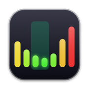

Stroomprijs MenubalkIn short: Stroomprijs Menubalk shows the electricity price per hour in your Mac menu bar. It only fetches public market prices from the internet and sends none of your data to do so. Your settings stay on your Mac. There is no account, no server of our own, no advertising and no tracking.
Stroomprijs Menubalk is made by Ed Lauwerens (appFactory), the Netherlands. Questions about this privacy policy can be sent to edsoftinfo@icloud.com.
The app fetches the public hourly market prices for electricity from EnergyZero (the Netherlands), about every fifteen minutes. The request contains only the period: no settings and no identifier. Like any website, EnergyZero receives your IP address when the app connects. No account is needed.
If you switch on notifications (for example when the cheapest hours begin), the app asks macOS for permission. The notifications are planned on your Mac by macOS itself; nothing goes through a server. You can switch them off in the app or in System Settings › Notifications.
Because we don't hold any data about you, there is nothing to request from us. To remove everything from your Mac: quit the app and drag it to the Trash. macOS keeps the app's data folder after that. To remove it too, choose Go › Go to Folder… in the Finder, enter ~/Library/Containers and drag the folder Stroomprijs Menubalk (it may also be shown as nl.appfactory.stroomprijs) to the Trash.
You also have the right to lodge a complaint with a data protection authority, in the Netherlands the Autoriteit Persoonsgegevens.
If the app starts handling data differently, we will update this page and the date at the top.
Stroomprijs Menubalk
In het kort: Stroomprijs Menubalk toont de stroomprijs per uur in de menubalk van je Mac. De app haalt alleen openbare marktprijzen van internet en stuurt daarvoor geen gegevens van jou mee. Je instellingen blijven op je Mac. Er is geen account, geen eigen server, geen reclame en geen tracking.
Stroomprijs Menubalk is gemaakt door Ed Lauwerens (appFactory), Nederland. Vragen over deze privacyverklaring kun je mailen naar edsoftinfo@icloud.com.
De app haalt ongeveer elk kwartier de openbare marktprijzen per uur voor stroom op bij EnergyZero (Nederland). In die vraag staat alleen de periode: geen instellingen en geen kenmerk van jou of je Mac. Zoals bij elke website ziet EnergyZero je IP-adres als de app verbinding maakt. Een account is niet nodig.
Zet je meldingen aan (bijvoorbeeld als de goedkoopste uren beginnen), dan vraagt de app macOS om toestemming. De meldingen worden door macOS zelf op je Mac ingepland; er gaat niets via een server. Je zet ze uit in de app of in Systeeminstellingen › Meldingen.
Omdat wij geen gegevens over je hebben, hoef je bij ons niets aan te vragen. Zo haal je alles van je Mac: stop de app en sleep hem naar de prullenmand. macOS laat daarna de gegevensmap van de app staan. Wil je die ook weg, kies dan in de Finder Ga › Ga naar map…, typ ~/Library/Containers en sleep de map Stroomprijs Menubalk (soms getoond als nl.appfactory.stroomprijs) naar de prullenmand.
Je hebt ook het recht een klacht in te dienen bij een toezichthouder voor privacy, in Nederland de Autoriteit Persoonsgegevens.
Gaat de app anders met gegevens om, dan passen we deze pagina en de datum bovenaan aan.